Kementerian PPN/Bappenas Direktorat Transmisi, Ketenagalistrikan, Kedirgantaraan, dan Antariksa
BUKU PANDUAN
DASHBOARD PraKTIk
Pengoperasian, Pembaruan Data, dan Pengelolaan GitHub
KetenagalistrikanTransmisi GasKedirgantaraan
Alamat dashboard: case4id.github.io/dashboard-case
Repositori: github.com/CASE4id/dashboard-case
Versi 1.0 · November 2026
Daftar Isi
1. Mengenal Dashboard PraKTIk
2. Menggunakan Dashboard
2.1 Bagian atas: sektor, bahasa, filter, tab
2.2 Sektor Ketenagalistrikan
2.3 Sektor Transmisi Gas
2.4 Sektor Kedirgantaraan
2.5 Bahasa Inggris, tautan, ponsel, dan bagian bawah
3. Cara Kerja Situs
4. Memperbarui Data (rutin tahunan)
4.1 Menyiapkan file Excel per sektor
4.2 Memeriksa file di halaman Cek Data
4.3 Mengunggah ke GitHub
4.4 Memeriksa hasil dan mengembalikan versi lama
5. GitHub untuk Akun Proyek
5.1 Istilah penting
5.2 Membuat akun proyek dan mengamankannya
5.3 Menjadikan akun proyek pemilik (Owner) organisasi
5.4 Mengundang dan mengeluarkan staf
5.5 Pengaturan GitHub Pages
5.6 Memantau publikasi (tab Actions)
5.7 Menerima perubahan dari pihak teknis (pull request)
6. Pemecahan Masalah
7. Serah Terima
Lampiran: Glosarium
Cara membaca buku ini
Bagian 1–2 untuk semua pengguna. Bagian 4 untuk petugas pembaruan data (sekali setahun per sektor). Bagian 5 untuk admin
yang memegang akun proyek GitHub. Lingkaran merah bernomor pada gambar dijelaskan oleh daftar bernomor di bawahnya.
Kotak abu-abu bergaris putus-putus adalah jalur klik di situs GitHub (ilustrasi, bukan tangkapan layar).
1Mengenal Dashboard PraKTIk
Dashboard PraKTIk menyajikan profil dan analisis tiga sektor yang menjadi lingkup Direktorat Transmisi, Ketenagalistrikan,
Kedirgantaraan, dan Antariksa (TKKA), Kementerian PPN/Bappenas. Dashboard ini menggantikan versi lama berbasis ArcGIS
dan kini berupa situs statis gratis: tidak memerlukan lisensi, server, atau basis data.
Sektor
Sumber data
Tahun
Tingkat rincian
Ketenagalistrikan
Statistik PLN (PT PLN (Persero))
2014–2025
Per unit PLN (UID/UIW, unit pembangkitan, transmisi), rincian provinsi di beberapa tabel, nasional
Transmisi Gas
BPS, Statistik Gas (Survei Tahunan Perusahaan Gas)
2020–2024
Nasional
Kedirgantaraan
BPS, Statistik Transportasi Udara
2020–2024
Nasional; per provinsi dan per bandara (2024)
Alamat
Kegunaan
case4id.github.io/dashboard-case
Dashboard untuk publik
case4id.github.io/dashboard-case/cek-data.html
Halaman Cek Data untuk staf (memeriksa file Excel sebelum diunggah)
github.com/CASE4id/dashboard-case
Repositori: tempat semua file situs dan data disimpan
Catatan penting tentang data unit PLN
Data ketenagalistrikan disajikan per unit PLN, bukan per provinsi. Untuk unit distribusi/wilayah, kapasitas pembangkit
hanya mencakup pembangkit yang dikelola unit tersebut (umumnya sistem terisolasi), bukan seluruh sistem interkoneksi.
Dashboard menampilkan catatan ini secara otomatis.
2Menggunakan Dashboard
2.1 Bagian atas: sektor, bahasa, filter, tab
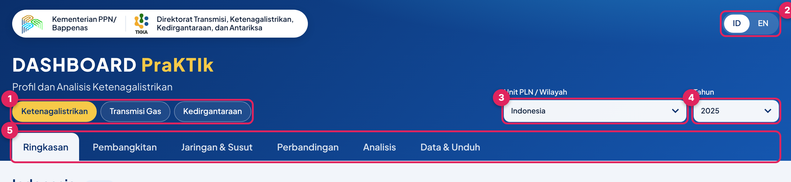
Gambar 2.1 · Bagian atas dashboard.
Pilihan sektor. Klik Ketenagalistrikan, Transmisi Gas, atau Kedirgantaraan. Tombol kuning = sektor yang sedang dibuka. Data tiap sektor baru dimuat saat sektornya dibuka.
Bahasa. ID (Bahasa Indonesia) atau EN (English). Pilihan diingat browser.
Unit PLN / Wilayah (hanya sektor Ketenagalistrikan). Pilih Indonesia, unit distribusi/wilayah, provinsi, unit pembangkitan, atau unit transmisi. Daftar hanya memuat unit yang punya data pada tahun terpilih.
Tahun. Tahun data yang ditampilkan. Tahun terbaru menjadi tampilan awal.
Tab. Halaman-halaman dalam sektor. Setiap sektor punya tab sendiri.
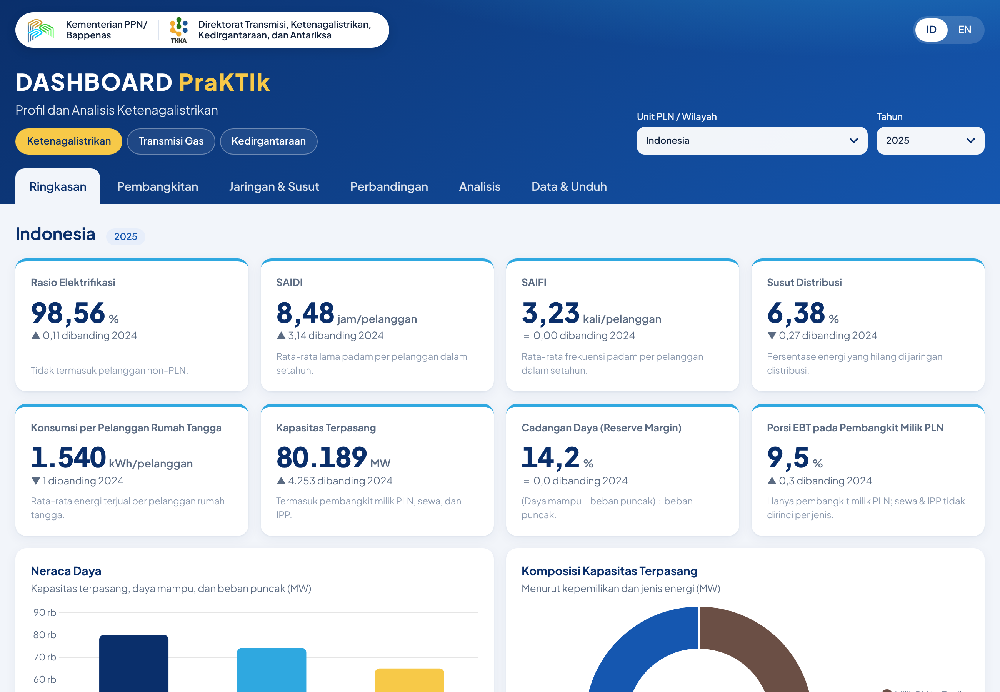
Gambar 2.2 · Tab Ringkasan sektor Ketenagalistrikan (Indonesia, 2025).
2.2 Sektor Ketenagalistrikan
Tab Ringkasan: kartu indikator
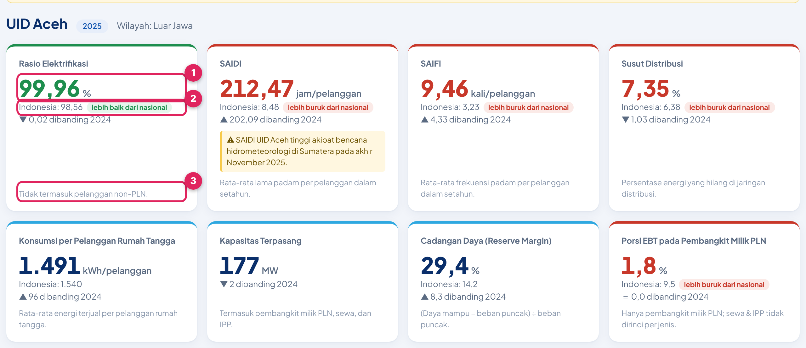
Gambar 2.3 · Kartu indikator untuk UID Aceh, 2025.
Nilai indikator untuk unit dan tahun terpilih, dengan satuannya.
Pembanding: nilai nasional (dengan label lebih baik/lebih buruk dan warna hijau/merah bila indikator punya arah baik) serta perubahan dari tahun sebelumnya (▲ naik, ▼ turun).
Keterangan singkat tentang definisi indikator.
Kotak kuning di dalam kartu adalah catatan khusus dari sheet catatan di file Excel, misalnya SAIDI UID Aceh 2025 yang tinggi akibat bencana.
Untuk unit distribusi/wilayah, dashboard juga menampilkan catatan cakupan pembangkit:
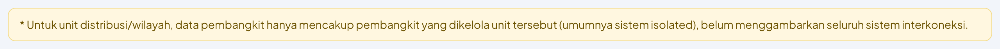
Gambar 2.4 · Catatan cakupan untuk unit distribusi/wilayah.
Tab Pembangkitan dan Jaringan & Susut
Pembangkitan: kapasitas terpasang per jenis pembangkit (EBT dan fosil), produksi energi per jenis, dan sumber energi (produksi sendiri, sewa, pembelian).
Jaringan & Susut: susut energi, SAIDI/SAIFI, panjang jaringan transmisi dan distribusi, serta trafo gardu induk.
Arahkan kursor ke grafik untuk melihat angkanya.
Tab Perbandingan: peringkat semua unit
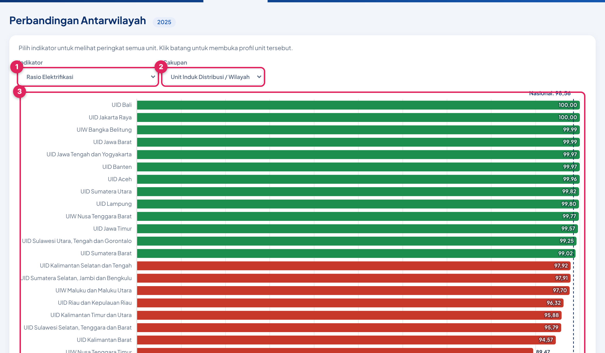
Gambar 2.5 · Peringkat rasio elektrifikasi per unit, 2025.
Indikator yang dibandingkan.
Cakupan: unit induk distribusi/wilayah, atau provinsi.
Grafik peringkat. Hijau = lebih baik dari nasional, merah = lebih buruk, kuning = unit yang sedang dipilih. Garis putus-putus = nilai nasional. Klik sebuah batang untuk membuka profil unit tersebut.
Peta
Di bawah grafik terdapat tempat untuk peta. Peta akan diaktifkan setelah data batas wilayah (GeoJSON) tersedia.
Tab Analisis: dua indikator
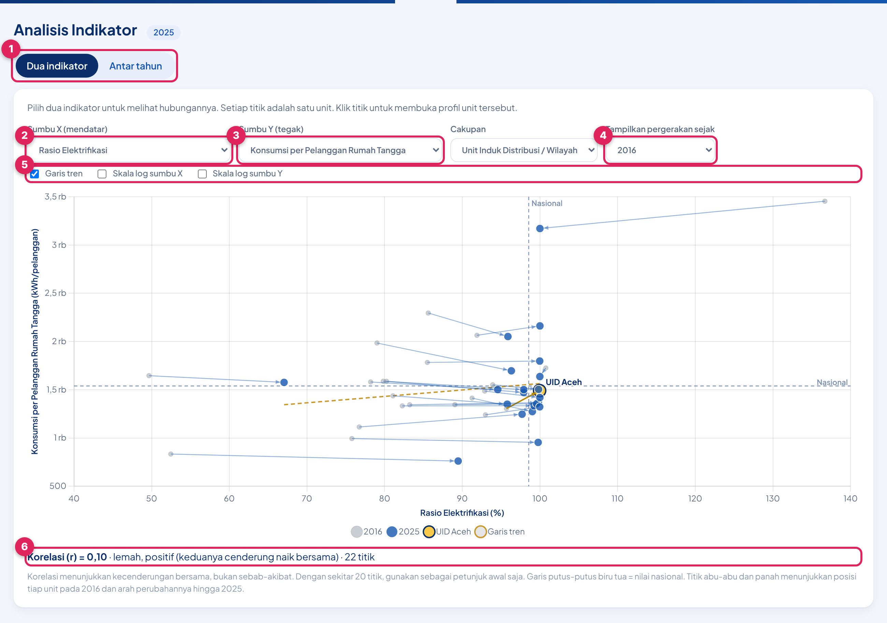
Gambar 2.6 · Hubungan rasio elektrifikasi dan konsumsi rumah tangga, dengan pergerakan sejak 2016.
Mode analisis:Dua indikator (gambar ini) atau Antar tahun (halaman berikut).
Sumbu X (mendatar): indikator pertama.
Sumbu Y (tegak): indikator kedua. Setiap titik = satu unit. Klik titik untuk membuka profil unit.
Pergerakan sejak: pilih tahun lama untuk melihat panah dari posisi tahun itu ke tahun terpilih.
Pilihan tampilan: garis tren dan skala logaritmik (berguna untuk angka yang sangat timpang, mis. kapasitas).
Korelasi (r) beserta penjelasan kekuatannya. Korelasi bukan sebab-akibat; dengan sekitar 20 titik, gunakan sebagai petunjuk awal.
Tab Analisis: antar tahun
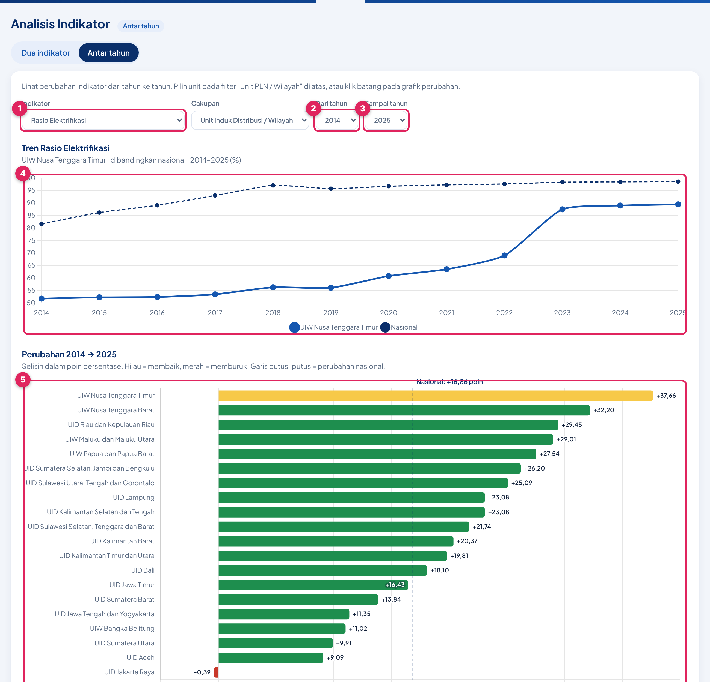
Gambar 2.7 · Tren rasio elektrifikasi UIW Nusa Tenggara Timur dan perubahan semua unit.
Indikator yang dianalisis.
Dari tahun dan
Sampai tahun untuk grafik perubahan.
Tren unit terpilih (garis biru) dibandingkan nasional (garis putus-putus) untuk semua tahun.
Perubahan semua unit antara dua tahun: poin persentase untuk indikator dalam %, persen untuk lainnya. Klik batang untuk mengganti unit pada grafik tren.
Perubahan definisi data
Beberapa deret data punya "patahan" karena PLN mengubah cara pelaporan (mis. SAIDI/SAIFI pada 2016, kapasitas terpasang 2014–2015).
Untuk indikator tersebut, perbandingan bawaan dimulai setelah patahan dan dashboard menampilkan penjelasannya. Rincian ada di
Catatan kualitas data di bawah grafik (klik untuk membuka):
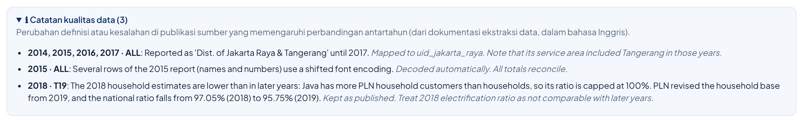
Gambar 2.8 · Catatan kualitas data (teks teknis dalam bahasa Inggris dari dokumentasi ekstraksi data).
Tab Data & Unduh
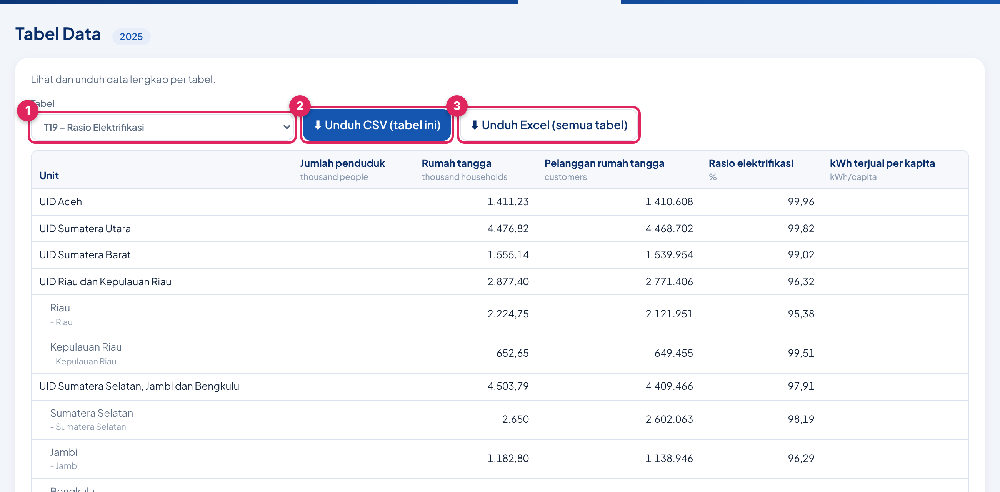
Gambar 2.9 · Tabel data dan tombol unduh.
Tabel yang ditampilkan (T01–T30, sesuai nomor tabel Statistik PLN).
Unduh CSV: tabel yang sedang ditampilkan, untuk tahun terpilih.
Unduh Excel: file Excel lengkap tahun tersebut (semua tabel). File ini juga menjadi templat untuk pembaruan data (Bab 4).
Teks kecil di bawah nama unit adalah nama unit sebagaimana tertulis di laporan tahun itu (nama unit PLN sering berganti).
Tanda * menandai nilai yang dihitung, bukan dipublikasikan.
2.3 Sektor Transmisi Gas
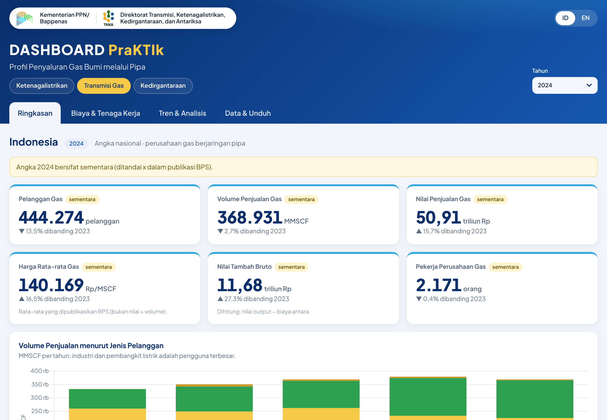
Gambar 2.10 · Ringkasan sektor Transmisi Gas, 2024.
Sektor Transmisi Gas berisi angka nasional perusahaan yang menjual gas melalui jaringan pipa. Tab yang tersedia:
Tab
Isi
Ringkasan
Pelanggan, volume dan nilai penjualan, harga rata-rata, nilai tambah bruto, pekerja; volume per jenis pelanggan, harga per jenis pelanggan, output dan biaya antara.
Biaya & Tenaga Kerja
Struktur biaya bahan & jasa, pekerja menurut pendidikan, balas jasa pekerja, pemakaian bahan bakar.
Tren & Analisis
Pilih satu deret data mana pun; tampil grafik tren, perubahan total, rata-rata pertumbuhan per tahun, dan perubahan tahunan.
Peringkat provinsi (penumpang, pergerakan pesawat, atau kargo), lima bandara tersibuk, dan daftar 238 bandara yang dapat dicari.
Tren & Analisis
Seperti sektor gas: pilih satu deret data.
Data & Unduh
Tabel A01–A06 sesuai sumber, unduh CSV dan Excel.
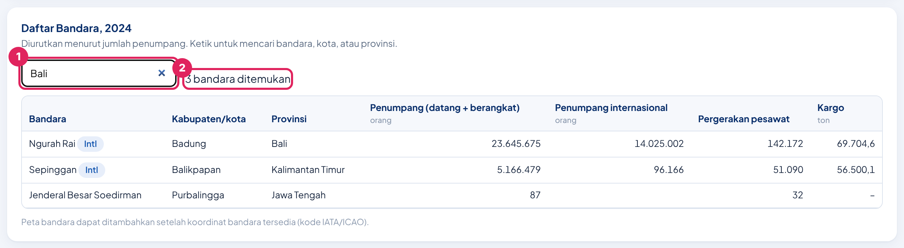
Gambar 2.13 · Daftar bandara: (1) kotak pencarian (contoh: "Bali"), (2) jumlah bandara yang ditemukan. Peringkat provinsi di atasnya dapat diubah ukurannya (penumpang, pergerakan pesawat, kargo).
2.5 Bahasa Inggris, tautan, ponsel, dan bagian bawah
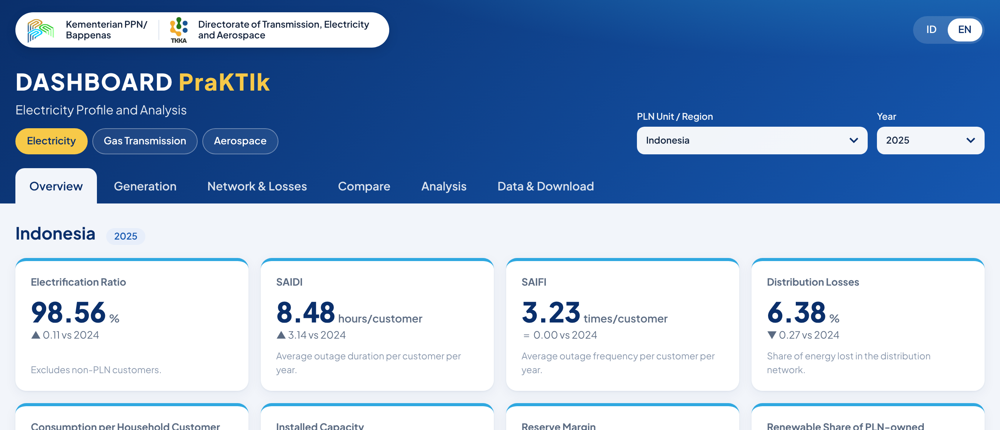
Gambar 2.14 · Tampilan bahasa Inggris (tombol EN).
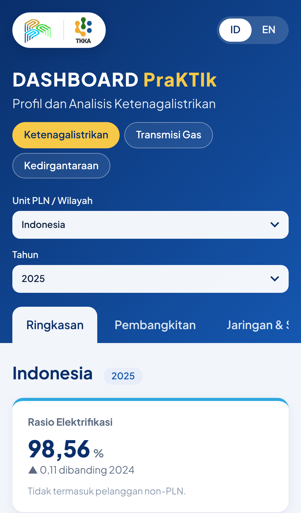
Gambar 2.15 · Tampilan di ponsel.
Membagikan tampilan sebagai tautan
Alamat di browser selalu menyimpan tampilan yang sedang dibuka (sektor, tab, unit, tahun, bahasa). Salin alamat itu
untuk membagikan tampilan yang sama persis, misalnya: case4id.github.io/dashboard-case/#tab=compare&unit=uid_aceh&year=2025
Bagian bawah (footer)
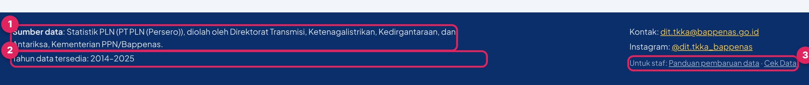
Gambar 2.16 · Bagian bawah halaman.
Sumber data sektor yang sedang dibuka.
Tahun data tersedia.
Tautan untuk staf: panduan pembaruan data dan halaman Cek Data.
3Cara Kerja Situs
Situs ini hanya terdiri dari file biasa (HTML, CSS, JavaScript) dan file Excel. Tidak ada server atau basis data.
Semua file disimpan di repositori GitHubCASE4id/dashboard-case. Layanan GitHub Pages menerbitkan isi
repositori menjadi situs secara gratis, otomatis setiap kali ada perubahan.
Alur pembaruan data
File Excel baru→Cek Data→Unggah ke GitHub→GitHub Pages menerbitkan (1–3 menit)→Dashboard menampilkan data baru
Isi repositori
Folder / file
Isi
Diubah oleh
data/listrik/
Statistik PLN, satu file per tahun: statistik-pln-2014.xlsx … statistik-pln-2025.xlsx
Petugas data
data/gas/
Statistik Gas, satu file berisi semua tahun: statistik-gas-2024.xlsx
Petugas data
data/udara/
Statistik Transportasi Udara, satu file berisi semua tahun: statistik-udara-2024.xlsx
Petugas data
PANDUAN-UPDATE-DATA.md
Panduan singkat pembaruan data (versi teks dari Bab 4)
Admin
assets/js/config.js
Pengaturan: indikator, teks sumber, kontak, daftar kolom
Admin (hati-hati)
index.html, cek-data.html, assets/ lainnya
Kode tampilan
Pihak teknis
README.md
Dokumentasi teknis (bahasa Inggris)
Pihak teknis
Riwayat selalu tersimpan
GitHub menyimpan setiap versi setiap file. Kesalahan hampir selalu dapat dibatalkan dengan mengembalikan versi sebelumnya (Bab 4.4 dan 5.7).
Repositori bersifat publik
Siapa pun dapat melihat isi repositori (syarat GitHub Pages gratis). Hanya anggota yang diundang yang dapat mengubah isinya.
Jangan pernah mengunggah data rahasia, kata sandi, atau dokumen internal ke repositori.
4Memperbarui Data
Pembaruan dilakukan sekali setahun per sektor, setelah publikasi sumber terbit. Waktu yang dibutuhkan ±30–60 menit.
Yang diperlukan: Microsoft Excel, browser (Chrome/Edge), dan akun GitHub yang sudah diundang (Bab 5.4).
Tidak perlu kemampuan pemrograman.
4.1 Menyiapkan file Excel per sektor
Prinsip untuk semua sektor: salin file terakhir, ganti namanya, lalu perbarui isinya. File terakhir dapat diunduh dari dashboard
(tab Data & Unduh → Unduh Excel). Nama file: huruf kecil semua, tanpa spasi, memakai tanda hubung.
Sektor
Nama file baru (contoh)
Yang diubah
Ketenagalistrikan
statistik-pln-2026.xlsx (file baru per tahun)
Ganti angka di sheet t01…t30 dengan Statistik PLN terbaru. Tahun diambil dari nama file.
Transmisi Gas
statistik-gas-2025.xlsx (TAHUN = tahun data terakhir)
Di sheet g01…g10: tambah kolom tahun baru di paling kanan (judulnya angka, mis. 2025); perbarui angka tahun lalu bila BPS merevisi.
Kedirgantaraan
statistik-udara-2025.xlsx (TAHUN = tahun data terakhir)
Di sheet a01…a06: tambah baris dengan kolom year = tahun baru. Jangan hapus tahun lama.
Aturan pengisian (semua sektor)
Boleh ✓
Jangan ✗
Mengubah angka di dalam sel
Mengubah nama sheet (t01, g01, a01, units, …)
Menambah baris unit/tahun baru
Mengubah atau menerjemahkan judul kolom di baris 1
Mengosongkan sel jika data tidak ada ("-")
Menggabungkan sel (merge cells)
Angka desimal dengan koma atau titik; negatif sebagai -3,53
Menulis teks di kolom angka (mis. "n/a", "±5")
Menambah baris total/judul di tengah tabel
Khusus Ketenagalistrikan
Baris indonesia (nasional) wajib ada di setiap tabel.
Jangan mengubah unit_id unit lama. Jika unit berganti nama, ubah kolom unit_name_reported saja. Unit baru: tambahkan barisnya di tabel dan di sheet units.
Sheet catatan (opsional): keterangan yang muncul sebagai kotak kuning pada kartu indikator (kolom year, unit_id, indicator, note_id, note_en).
4.2 Memeriksa file di halaman Cek Data
Sebelum diunggah, setiap file wajib diperiksa. Pemeriksaan berlangsung di browser Anda; file tidak dikirim ke mana pun.
Buka case4id.github.io/dashboard-case/cek-data.html, atau klik Cek Data di bagian bawah dashboard.
Seret file Excel ke kotak bergaris putus-putus (1), atau klik kotak itu untuk memilih file. Sektor dikenali dari nama file.
Baca hasilnya. ✔ SIAP DIUNGGAH: lanjut ke 4.3; hasil juga menyebut folder tujuan. ✖ BELUM SIAP: perbaiki di Excel, lalu cek ulang.
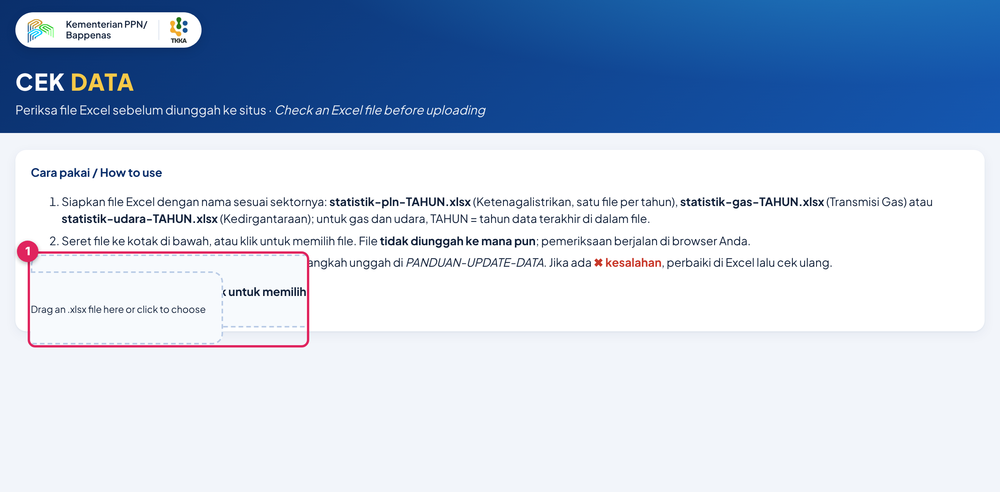
Gambar 4.1 · Halaman Cek Data.
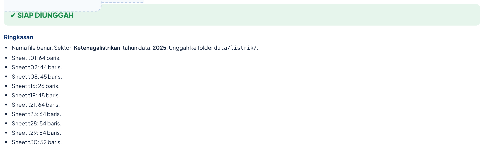
Gambar 4.2 · Contoh hasil: file siap diunggah.
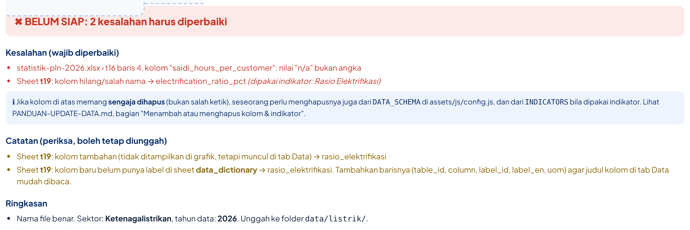
Gambar 4.3 · Contoh hasil: file belum siap. Setiap kesalahan menyebut sheet, baris, dan kolom.
Cara membaca contoh di atas:
Kesalahan (merah) wajib diperbaiki. Di sini: sel berisi teks "n/a" di kolom angka (sheet t16, baris 4), dan judul kolom
electrification_ratio_pct diganti menjadi "rasio_elektrifikasi". Cek Data juga menyebut indikator yang terdampak.
Catatan (kuning) perlu diperiksa, tetapi file boleh tetap diunggah, misalnya nilai di luar rentang wajar.
Ringkasan menyebut sektor, tahun, folder tujuan, dan jumlah baris per sheet.
Cek Data tidak memeriksa kebenaran angka
Cek Data memastikan file dapat dibaca dashboard. Kesesuaian angka dengan publikasi tetap harus diperiksa manusia (Bab 4.4).
4.3 Mengunggah ke GitHub
Masuk ke github.com dengan akun Anda (Sign in, kanan atas).
Klik folder data, lalu folder sektornya: listrik, gas, atau udara.
Klik tombol Add file (kanan atas daftar file), lalu Upload files.
Seret file Excel ke halaman, atau klik choose your files.
Di bagian Commit changes di bawah, tulis keterangan singkat, mis. Tambah data Statistik PLN 2026.
Pastikan pilihan Commit directly to the main branch terpilih, lalu klik tombol hijau Commit changes.
Jalur klik (ilustrasi)
github.com/CASE4id/dashboard-case→data→listrik / gas / udara→Add file ▾→Upload files→seret file→Commit directly to the main branch→Commit changes
Memperbaiki file yang sudah diunggah
Unggah ulang file dengan nama yang sama persis ke folder yang sama. GitHub menggantikan file lama; versi lama tetap tersimpan di riwayat.
Batas ukuran
Unggah lewat situs GitHub dibatasi 25 MB per file. File data dashboard hanya ±20–80 KB, jadi tidak masalah. Jangan mengunggah PDF publikasi ke repositori.
4.4 Memeriksa hasil dan mengembalikan versi lama
Tunggu 1–3 menit. Status penerbitan terlihat di tab Actions repositori (Bab 5.6): centang hijau = selesai.
Buka dashboard, pilih sektornya, tekan Ctrl + F5. Browser kadang menampilkan versi lama hingga ±10 menit; untuk memastikan,
buka di jendela incognito (Ctrl + Shift + N).
Pastikan tahun baru muncul di pilihan Tahun, lalu bandingkan beberapa angka (terutama angka nasional) dengan publikasi.
Jika muncul kotak kuning "Sebagian data tidak terbaca", klik untuk melihat rinciannya, perbaiki file, lalu unggah ulang.
Mengembalikan file ke versi sebelumnya
Jalur klik (ilustrasi)
buka file di folder data→History→pilih versi sebelumnya→⋯ → View file→Download raw file→unggah ulang dengan nama sama (4.3)
5GitHub untuk Akun Proyek
Bab ini untuk admin yang memegang akun proyek. Akun proyek adalah akun GitHub milik direktorat (bukan milik pribadi),
sehingga pengelolaan dashboard tidak bergantung pada satu orang.
5.1 Istilah penting
Istilah
Arti dalam proyek ini
Akun (account)
Identitas login di GitHub: akun pribadi tiap staf, dan satu akun proyek milik direktorat.
Organisasi
CASE4id: "kantor" di GitHub yang memiliki repositori. Anggotanya adalah akun-akun yang diundang.
Owner / Member
Peran di organisasi. Owner dapat mengatur segalanya (anggota, pengaturan, penghapusan). Member hanya mendapat akses yang diberikan.
Repositori
dashboard-case: folder proyek berisi semua file situs dan data, beserta riwayatnya.
Commit
Satu perubahan yang disimpan (mis. "Tambah data 2026"), tercatat siapa dan kapan.
Branch
Salinan kerja. main = versi yang tampil di situs. Pihak teknis bekerja di branch lain lalu mengajukan pull request.
Pull request
Usulan perubahan dari sebuah branch ke main, untuk ditinjau lalu digabungkan (Merge).
GitHub Pages
Layanan yang menerbitkan isi main menjadi situs case4id.github.io/dashboard-case.
Actions
Proses otomatis GitHub; di sini menjalankan penerbitan situs ("pages build and deployment") setiap ada perubahan.
5.2 Membuat akun proyek dan mengamankannya
Buka github.com/signup. Gunakan email instansi yang dapat diakses bersama/diwariskan (mis. email direktorat), bukan email pribadi.
Pilih nama pengguna yang jelas, mis. tkka-bappenas. Simpan kata sandi di pengelola kata sandi kantor.
Aktifkan verifikasi dua langkah (2FA): foto profil (kanan atas) → Settings → Password and authentication →
Enable two-factor authentication. Gunakan aplikasi autentikator di ponsel dinas.
Unduh dan simpan recovery codes di tempat aman (mis. dicetak dan disimpan di lemari arsip). Tanpa kode ini, akun yang kehilangan ponsel autentikator bisa terkunci permanen.
Jalur klik 2FA (ilustrasi)
foto profil→Settings→Password and authentication→Enable two-factor authentication→simpan recovery codes
5.3 Menjadikan akun proyek pemilik (Owner) organisasi
Langkah ini dilakukan oleh Owner saat ini (pemilik akun yang membangun dashboard).
Buka github.com/CASE4id → tab People → tombol Invite member.
Ketik nama pengguna akun proyek, pilih peran Owner, lalu kirim undangan.
Akun proyek menerima undangan: buka email undangan, atau login lalu buka github.com/orgs/CASE4id/invitation → Join CASE4id.
Periksa di tab People: akun proyek tercatat sebagai Owner.
Selalu ada minimal dua Owner
Pertahankan sedikitnya dua Owner (mis. akun proyek dan satu admin), agar organisasi tidak terkunci jika satu akun hilang.
Organisasi juga dapat mewajibkan 2FA bagi semua anggota: Settings organisasi → Authentication security.
5.4 Mengundang dan mengeluarkan staf
Petugas pembaruan data cukup menjadi Member dengan akses Write ke repositori (dapat mengunggah file, tetapi tidak dapat mengubah pengaturan).
Staf membuat akun GitHub pribadi (gratis) dan memberi tahu nama penggunanya.
Undang ke organisasi: github.com/CASE4id → People → Invite member → peran Member.
Beri akses ke repositori: buka repositori → Settings → Collaborators and teams → Add people → pilih staf → peran Write.
Staf menerima undangan (email atau notifikasi GitHub).
Jalur klik akses repositori (ilustrasi)
CASE4id/dashboard-case→Settings→Collaborators and teams→Add people→Role: Write
Mengeluarkan staf (mis. pindah tugas): github.com/CASE4id → People → centang nama → Remove from organization.
Lakukan pada hari terakhir tugas sebagai bagian dari serah terima.
Pengaturan ini sudah aktif dan biasanya tidak perlu diubah. Periksa bila situs tidak tampil sama sekali.
Jalur klik (ilustrasi)
CASE4id/dashboard-case→Settings→Pages→Source: Deploy from a branch→Branch: main · / (root)→Save
Custom domain
Kolom Custom domain di halaman yang sama dipakai untuk alamat sendiri (mis. praktik.bappenas.go.id). Jangan mengisinya
sebelum catatan DNS dibuat oleh Pusdatin; situs akan langsung dialihkan ke alamat baru dan tidak dapat diakses. Jika terlanjur, kosongkan kolom itu lalu Save.
5.6 Memantau publikasi (tab Actions)
Setiap perubahan pada main memicu proses pages build and deployment di tab Actions repositori.
Tanda
Arti
Tindakan
✓ hijau
Situs sudah diperbarui
Periksa dashboard (incognito)
● kuning, beberapa menit
Sedang berjalan / antre
Tunggu
✗ merah (mis. Server Error, 502)
Gangguan sementara di server GitHub, bukan kesalahan file
Buka run → Re-run jobs → Re-run all jobs. Jika gagal lagi, cek githubstatus.com.
● kuning > 15 menit
Antrean GitHub macet; run tidak dapat dibatalkan
Tunggu, atau buat perubahan kecil apa pun (setiap perubahan memulai run baru)
5.7 Menerima perubahan dari pihak teknis (pull request)
Perubahan kode (fitur baru, perbaikan) diajukan pihak teknis sebagai pull request. Admin meninjau lalu menggabungkannya.
Buka repositori. Jika ada pita kuning "… had recent pushes", klik Compare & pull request; atau buka tab Pull requests.
Baca judul dan deskripsi, klik Create pull request (jika belum dibuat).
Klik Merge pull request → Confirm merge. Situs diperbarui dalam beberapa menit.
Membatalkan perubahan yang sudah digabungkan
Buka pull request yang sudah digabungkan → tombol Revert → GitHub membuat pull request baru yang membatalkannya → Merge.
Situs kembali ke keadaan sebelumnya.
6Pemecahan Masalah
Gejala
Penyebab umum
Solusi
Tahun baru tidak muncul
Nama file salah (mis. Statistik PLN 2026.xlsx) atau salah folder
Ubah nama sesuai format (Bab 4.1), unggah ke folder sektornya
Perubahan belum terlihat
Penerbitan belum selesai, atau browser menyimpan versi lama
Cek tab Actions; buka di jendela incognito; tunggu hingga ±10 menit
Kartu "Data tidak tersedia"
Sel kosong atau baris unit tidak ada
Periksa sheet terkait; jalankan Cek Data
Kotak kuning "Sebagian data tidak terbaca"
Teks di kolom angka atau sheet hilang
Klik kotak untuk rincian; perbaiki; unggah ulang
Situs kosong / pesan merah
File rusak atau situs sedang diperbarui
Tunggu 3 menit; jika tetap, kembalikan versi sebelumnya (4.4) atau Revert pull request terakhir (5.7)
✗ merah di Actions
Gangguan server GitHub
Re-run all jobs (5.6)
Tidak bisa mengunggah (tombol Add file tidak ada)
Akun belum diberi akses Write atau belum menerima undangan
Minta admin memeriksa 5.4
Lupa kata sandi akun proyek
—
Reset lewat email instansi; jika 2FA hilang, gunakan recovery codes (5.2)
Kapan memanggil bantuan teknis
Menambah grafik, tab, atau sektor baru; publikasi sumber berubah format; menambah peta; memindahkan situs ke server Bappenas (mis. bacadata).
Dokumentasi teknis ada di README.md. Menambah atau menghapus indikator sederhana dijelaskan di PANDUAN-UPDATE-DATA.md.
7Serah Terima
Daftar periksa
Akun proyek dibuat dengan email instansi; 2FA aktif; recovery codes disimpan di tempat aman
Akun proyek menjadi Owner organisasi CASE4id; sedikitnya dua Owner aktif
Petugas pembaruan data diundang sebagai Member dengan akses Write ke repositori
Latihan bersama: satu siklus pembaruan data lengkap (siapkan file → Cek Data → unggah → periksa) oleh petugas
Latihan mengembalikan file ke versi sebelumnya dan Revert pull request
Tabel kontak di bawah dan di PANDUAN-UPDATE-DATA.md diisi
Kontak dan Instagram di bagian bawah dashboard sudah benar (assets/js/config.js)
Akun pribadi yang tidak lagi terlibat dikeluarkan dari organisasi
Jadwal pembaruan dicatat: Statistik PLN, Statistik Gas, Statistik Transportasi Udara (perkiraan bulan terbit)
Kontak
Peran
Nama
Email / kontak
Pemilik konten
Direktorat TKKA, Bappenas
dit.tkka@bappenas.go.id
Admin GitHub (akun proyek)
Admin cadangan (Owner kedua)
Petugas data Ketenagalistrikan
Petugas data Gas & Kedirgantaraan
Bantuan teknis
Jadwal pembaruan
Sektor
Publikasi
Perkiraan terbit
Penanggung jawab
Ketenagalistrikan
Statistik PLN
Transmisi Gas
BPS, Statistik Gas
Kedirgantaraan
BPS, Statistik Transportasi Udara
Lampiran: Glosarium
Istilah
Arti
EBT
Energi baru terbarukan (PLTA, PLTM, PLTMH, PLTP, PLTS, PLTB, PLTBm).
SAIDI / SAIFI
Rata-rata lama padam (jam) dan frekuensi padam (kali) per pelanggan per tahun.
Susut
Energi yang hilang di jaringan transmisi/distribusi, dalam persen.
Rasio elektrifikasi
Pelanggan rumah tangga PLN dibagi jumlah rumah tangga (tidak termasuk pelanggan non-PLN).
Cadangan daya (reserve margin)
(Daya mampu − beban puncak) ÷ beban puncak.
UID / UIW
Unit Induk Distribusi / Unit Induk Wilayah PLN.
MMSCF / MSCF
Juta / ribu standar kaki kubik (satuan volume gas).
Nilai tambah bruto
Nilai output dikurangi biaya antara.
Faktor muatan penumpang
Km-penumpang terpakai ÷ km-tempat duduk tersedia.
AOC 121 / AOC 135
Sertifikat operator angkutan udara niaga berjadwal / komuter & carter.
Korelasi (r)
Ukuran kecenderungan dua indikator bergerak bersama, dari −1 sampai 1.
Poin persentase
Selisih dua persentase (mis. 95% → 97% = +2 poin).
Incognito
Jendela browser tanpa riwayat/cache; menampilkan versi situs terbaru.
CSV
Format tabel teks sederhana yang dapat dibuka di Excel.
Tangkapan layar dashboard dibuat dari versi November 2026. Kotak "jalur klik" untuk GitHub adalah ilustrasi
urutan tombol; tampilan situs GitHub dapat sedikit berbeda dari waktu ke waktu, tetapi nama tombolnya umumnya tetap.